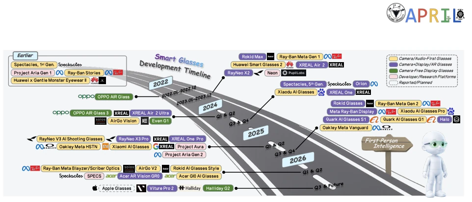
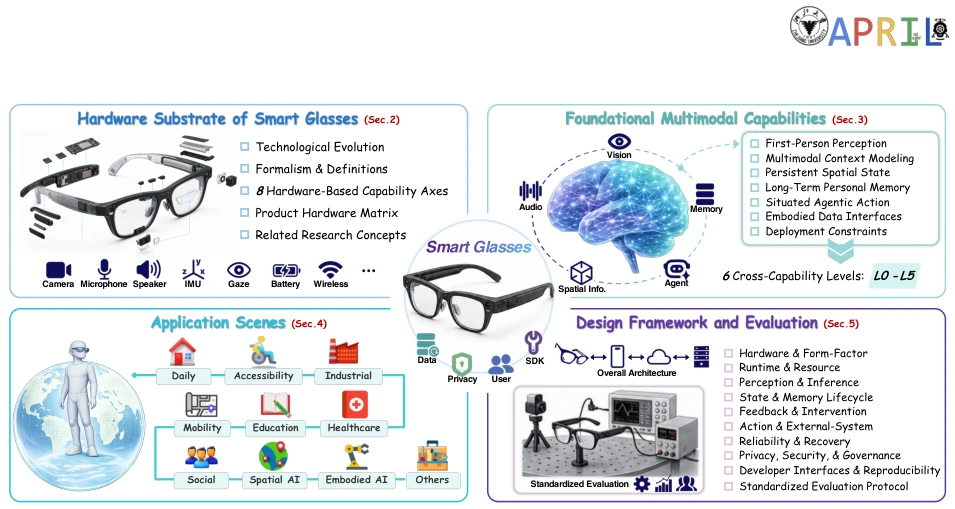
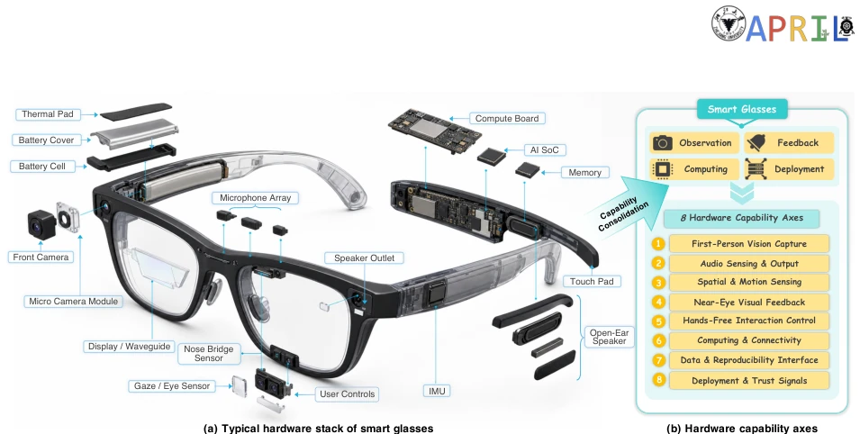
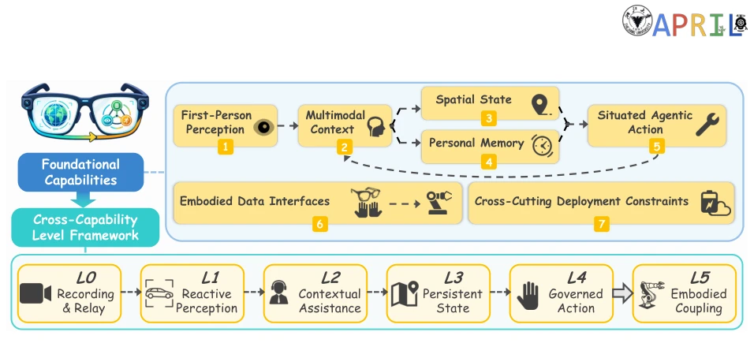
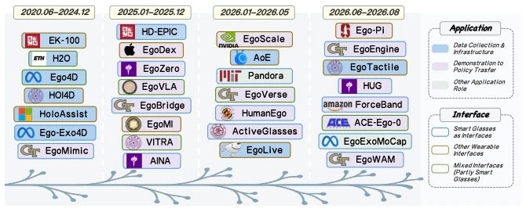

This review attempts to integrate fragmented smart glasses research into a "first-person intelligent platform". The premise is good, but it reads like a "pitfall avoidance guide" written for hardware manufacturers. The authors elevate smart glasses from "camera + display" to a "perception-state-action closed loop", which is quite incisive, pointing out that model accuracy alone does not equate to system utility. However, although the L0-L5 classification appears sophisticated, it lacks specific quantitative standards, resembling more of a conceptual framework than an engineering blueprint, making it difficult to directly guide model training. The discussion on privacy and energy consumption is pragmatic, but as a review in the field of Embodied AI, the excavation of deep technical details regarding Embodied Interaction is slightly insufficient, focusing more on system architecture than algorithmic innovation. The text extensively cites commercial product parameters but fails to deeply explore specific deployment bottlenecks of multimodal models on edge devices, such as accuracy loss after quantization. It is suitable for beginners, but hardcore technical enthusiasts might find it not "thirst-quenching" enough, resembling more of an industry analysis report than a pure research paper.
Existing research is overly fragmented; AR, Egocentric Vision, and Multimodal Models operate independently [12-21]. Although model recognition capabilities have improved, there is a lack of end-to-end system utility verification. For instance, offline datasets dominate, ignoring sensor dropout and thermal throttling [22-28]. HCI and privacy research point out interaction issues but fail to resolve closed-loop reliability [29-33]. Embodied AI research utilizes first-person data but lacks boundaries for action authorization under wearable constraints [34-41]. The core problem is: hardware capability does not equal intelligent claims, and component accuracy does not equal system utility. It is necessary to answer four coupled questions: what the system can observe, how mechanisms are combined, where value risks lie, and whether evidence is sufficient. Furthermore, existing work often assumes ideal hardware conditions, neglecting weight, battery life, and privacy risks in real-world wearing scenarios, resulting in laboratory achievements being difficult to deploy.

Figure 2 Evolution of mainstream smart-glasses products and platforms. The timeline summarizes representative hardware entries and associated manufacturers over time. Fill colors denote four product profiles in Sec. 2.1, while dashed outlines denote reported entries that are not yet publicly available.
Overall, it adopts a closed-loop analysis framework, ranging from hardware foundation to capability, application, design, and evidence. First, it formalizes the data flow $o_t^g$ and closed-loop system $F_ heta$, defining a constrained objective function and clarifying boundaries such as latency, energy consumption, and privacy. The core innovation lies in the 8 major hardware capability axes (such as first-person visual capture, spatial motion perception, etc.), which unify heterogeneous devices into a common coordinate system, avoiding confusion from marketing terminology. It proposes an L0-L5 cross-capability framework, covering six levels from capture to embodied coupling, distinguishing task and evidence conditions, with L5 even crossing embodied boundaries. The application layer organizes literature according to 9 scenarios (such as daily, industrial, medical), connecting tasks, datasets, and stakeholders to clarify responsibility attribution. Finally, it provides a 9-dimensional deployment framework and an evidence ladder, ranging from laboratory measurement to long-term field verification, emphasizing reproducibility and privacy auditing. It particularly emphasizes the matching between hardware configuration and capability claims, pointing out that component-level accuracy cannot directly derive system-level utility, thereby providing a standardized evaluation baseline for subsequent research.

Figure 1 Organization and analytical loop of this survey. The survey connects the hardware substrate and first- person data-flow formulation (Sec. 2), foundational capabilities and L0-L5 evidential levels (Sec. 3), application scenes and responsibility structures (Sec. 4), and deployment-oriented design and standardized evaluation (Sec. 5). Evaluation evidence and observed failures feed back into system design and delimit the capability claims that can be defended.

Figure 3 Hardware stack and capability-axis consolidation. Left panel (a) presents the typical hardware components and placement constraints of smart glasses through a 45-degree exploded view, while right panel (b) consolidates the hardware profile into eight capability axes through four criteria: observation stream, feedback channel, computing path, and practical deployment. The exploded view is a conceptual schematic and does not represent a specific commercial device.

Figure 4 Foundational capabilities and L0-L5 cross-capability level framework. 1) First-person perception, 2) multimodal context, 3) spatial state, 4) personal memory, and 5) situated action form the core dependency structure of first-person intelligence; 6) embodied data interfaces extend this structure toward robot learning and cross-embodiment transfer; and 7) deployment constraints cut across all capabilities. Bottom: L0-L4 form a wearer-facing progression, whereas L5 is an orthogonal cross-embodiment extension in Sec. 3.8.
实验Experiments
作为综述，本文无传统实验，而是通过"证据阶梯"评估能力主张。利用 Tab. 2 对代表性产品（如 Ray-Ban Meta Gen 2, Project Aria）进行硬件能力矩阵评分（L0-L5）。通过对比不同产品路线（Camera/Audio-first vs AR）在 8 个轴上的表现，揭示能力非单调性，指出传感器数量不决定智能水平。引用 Ego4D [3], Project Aria [6], HoloAssist [5] 等数据集验证场景需求，分析不同场景下的责任结构。发现现有商业产品多停留在 L2 辅助，L4/L5 需更多热稳定性和电池证据。强调证据需区分组件级与系统级，指出当前缺乏长期现场验证数据。通过九维部署框架，将理论能力映射到实际约束，为未来研究提供了可复现的评估路径，而非简单的产品排名。
As a review, this paper contains no traditional experiments but evaluates capability claims through an "evidence ladder". It utilizes Tab. 2 to score the hardware capability matrix (L0-L5) for representative products (e.g., Ray-Ban Meta Gen 2, Project Aria). By comparing the performance of different product routes (Camera/Audio-first vs AR) across the 8 axes, it reveals capability non-monotonicity, pointing out that the number of sensors does not determine the intelligence level. It cites datasets such as Ego4D [3], Project Aria [6], and HoloAssist [5] to verify scenario requirements and analyzes the responsibility structure under different scenarios. It finds that existing commercial products mostly remain at L2 assistance, while L4/L5 require more evidence regarding thermal stability and battery life. It emphasizes that evidence must distinguish between component-level and system-level, pointing out the current lack of long-term field verification data. Through the 9-dimensional deployment framework, it maps theoretical capabilities to actual constraints, providing a reproducible evaluation path for future research rather than a simple product ranking.

Figure 5 Temporal evolution and taxonomy of representative work on smart glasses and related wearable interfaces for embodied intelligence. As detailed in Sec. 4.9, the branching timeline organizes representative work from 2020.06 to 2026.08 into three application roles using distinct fill colors, while outline colors indicate the corresponding data-interface categories.